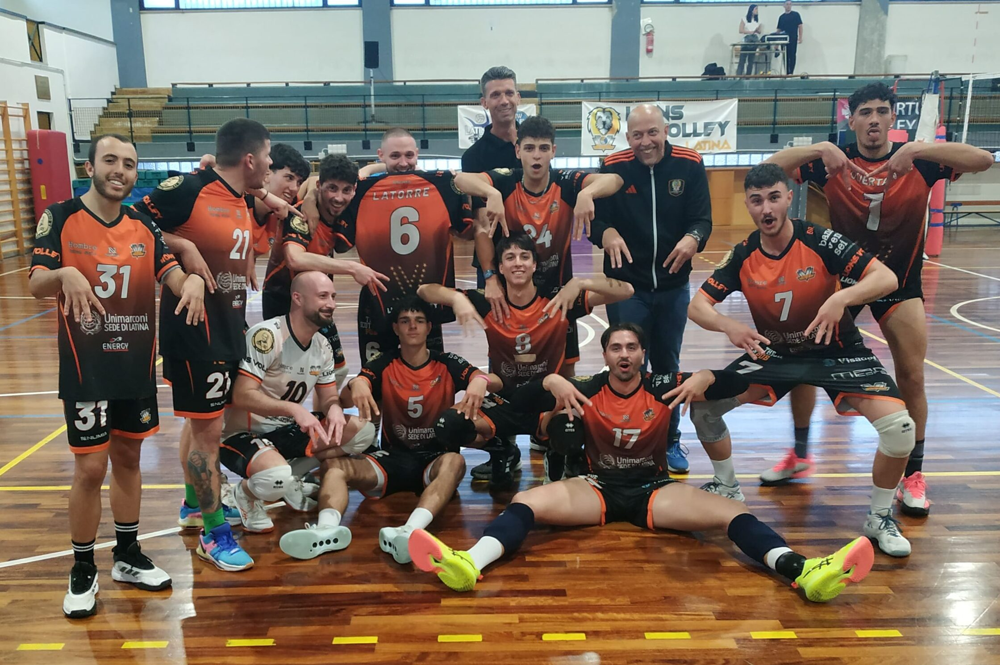

23 Marzo 2026
Vittoria schiacciante nel derby!

L'esultanza alla fine della vittoria schiacciante!
Latina - Una prestazione monumentale quella messa in campo oggi dalla squadra. Il derby non è mai una partita come le altre, e i ragazzi hanno dimostrato una determinazione fuori dal comune, dominando ogni set con grinta e precisione tattica. Fin dal primo fischio d'inizio, l'atmosfera nel palazzetto era elettrica, ma la concentrazione del gruppo non è mai venuta meno.
Ogni punto è stato sudato e conquistato con un gioco corale che ha lasciato poco spazio agli avversari. Questa vittoria non porta solo tre punti fondamentali per la classifica, ma consolida lo spirito di un gruppo che punta dritto ai vertici del campionato. Il pubblico ha risposto con un calore immenso, accompagnando ogni schiacciata con un boato che ha trascinato i giocatori verso il traguardo finale.
"Il ruggito dei ragazzi oggi si è sentito forte. Questa è la mentalità che vogliamo." - Coach Pozzi
Prossimo appuntamento sabato prossimo fuori casa per confermare questo splendido stato di forma.